Here are descriptions of some of the more interesting or significant changes made to the Java development tools (JDT) for the 4.35 release of Eclipse. They are grouped into:
See also the Eclipse Platform What's New document for changes in the Platform.
We also recommend to read the Tips and Tricks.
Java Editor |
|
| Enhanced folding for control statements |
This feature enhances the code folding mechanism in Eclipse JDT by enabling folding for control statements like if, while, and for.
It improves code readability and navigation by allowing developers to collapse and expand structured blocks.
In very large files, opening the file may take slightly longer, but afterwards, everything functions as normal.
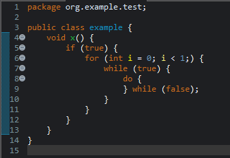 The feature can be enabled in the settings under Java → Editor → Folding. 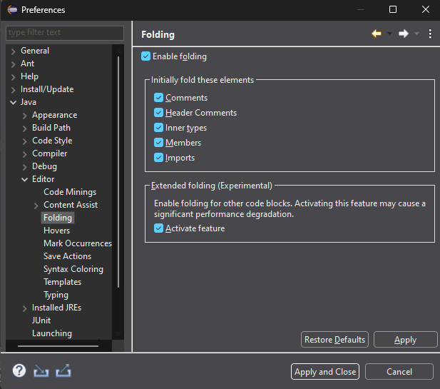 |
| New add permitted types quick-fix |
A new quick-fix has been created for Java 21 and up to add
permitted types as case labels to
a switch statement/expression that specifies a variable
for the expression that has a sealed type
and the switch has no case labels added yet. The quick-fix will
also add null and default case labels to make
the switch exhaustive.
In the following example, there is a sealed type: Shape that only permits Circle and Crescent classes to extend it. 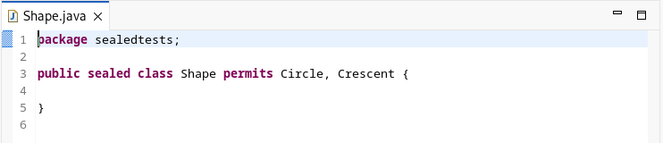 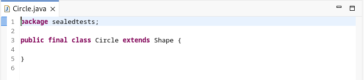 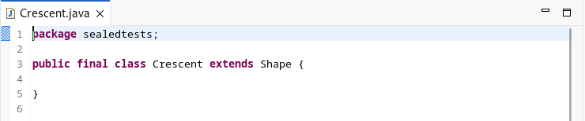The following code gets a compiler error and the new Add permitted type cases quick-fix is offered: 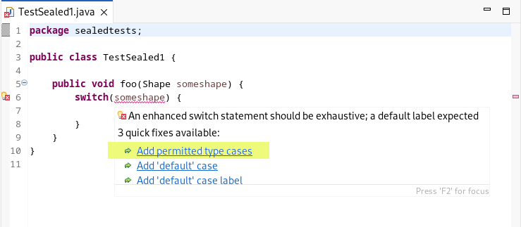After selecting this quick-fix, this results in: 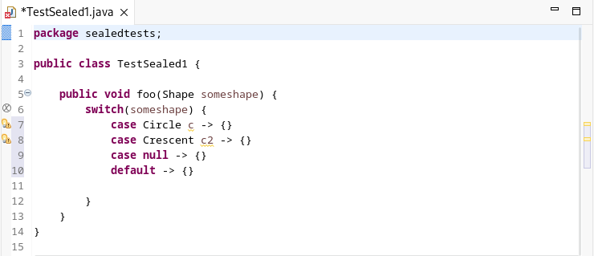 |
| New pattern instanceof to switch cleanup |
A new clean-up and quick-assist has been added for Java 21 and up to
convert if statements using pattern instanceof expressions
into a switch statement or switch expression (if possible).
The transformation only applies if there are three
or more pattern instanceof references to a single variable.
To use the clean-up, go to the Java Feature
tab of the clean-up configuration dialog under Java 21 and
select Pattern instanceof to Switch.
For the following example: 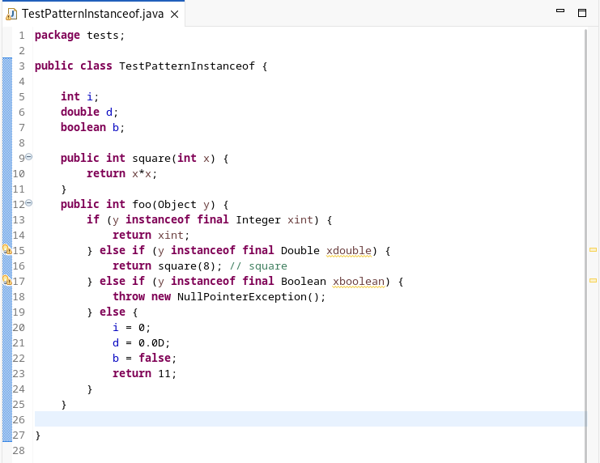Applying the clean-up results in: 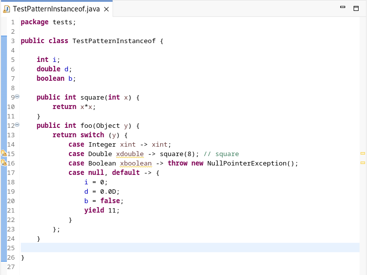In cases where a switch expression is not possible, a switch statement will be created instead. The quick-assist is activated by clicking CTRL+1 while having the cursor pointing within an if/else if/else block. |
| String concat to text block clean-up enhancement |
The String concatenation to text block clean-up/quick-assist has been
enhanced with regards to converting a StringBuilder or StringBuffer.
There are situations where the StringBuilder/StringBuffer cannot
be converted directly into a text block (for example, if the StringBuffer
is further appended to or is passed as an argument to a method). In
the past, the code would be left unaltered but now a text block will
be used to initialize the StringBuffer/StringBuilder if not too
small to warrant a text block.
The clean-up is enabled on the Java Feature tab underi Java 15 by selecting both: Convert String concatenation to text block and Include StringBuffer or StringBuilder concatenations.For example, the following code sample: 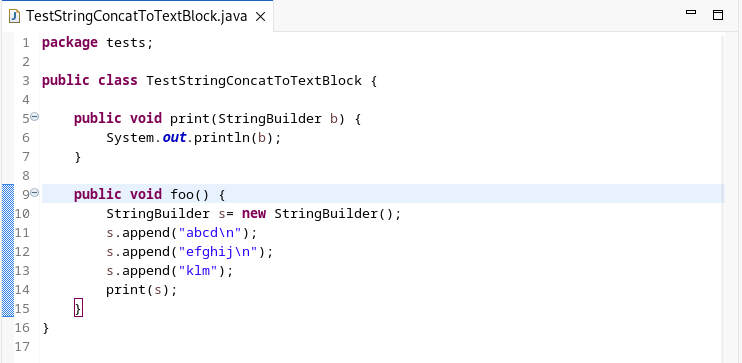gets converted to: 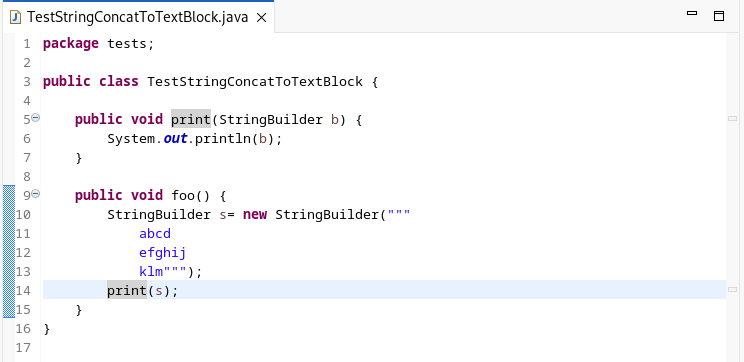 |
Debug |
|
| Compare Objects from Variables View |
Developers can now easily compare elements in objects of the same type, such as Lists, CharSequences, Sets, Iterables, Maps, Wrappers, Queues, and Deques , directly from the variables view.
This feature provides a summarised overview of their similarities and differences.
For other Java types, comparisons will be made based on their fields (if available), or by their references if fields are not present.
This eliminates the need to write explicit comparison code in the debug shell or manually inspect each collection. Simply stop at a breakpoint, select at least two variables of the same type, and view the comparison results.. Here's an example We have stopped at line 26 which left us 4 objects of List types, now all we have to do is just select all 4 and choose "Compare" from right click 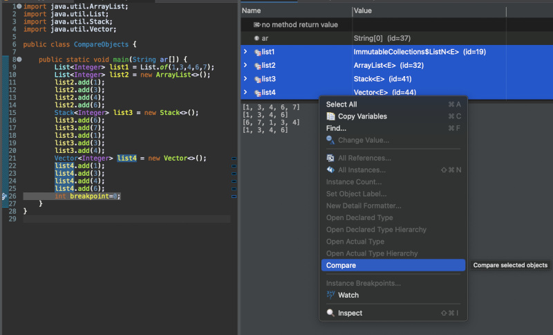 Results 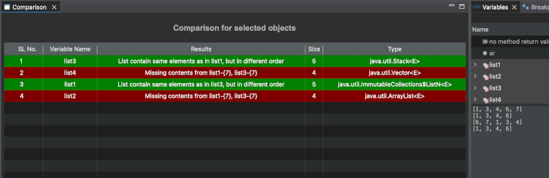 Another example of comparing two char sequences 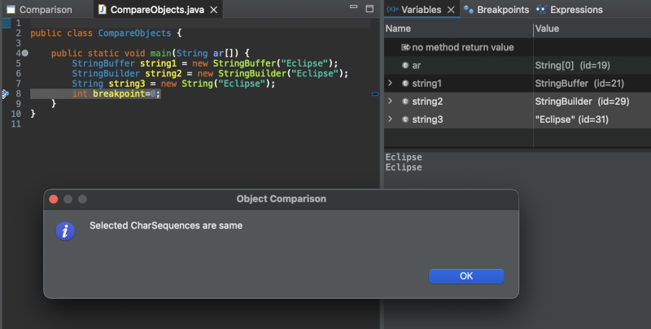 Maps 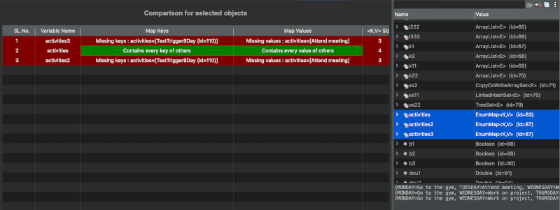 Custom Types (Fields available) 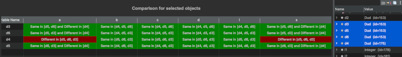 Custom Types (Fields unavailable) 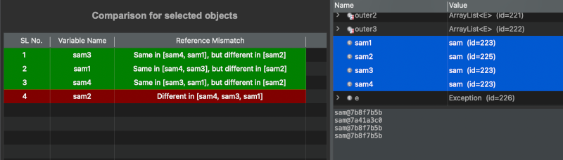 |
| Detail formatters for primitives and arrays |
Developers can now add custom formatters for Java primitives and arrays. An additional option to configure formatters for primitives is available under Preferences -> Detail Formatters -> Add .
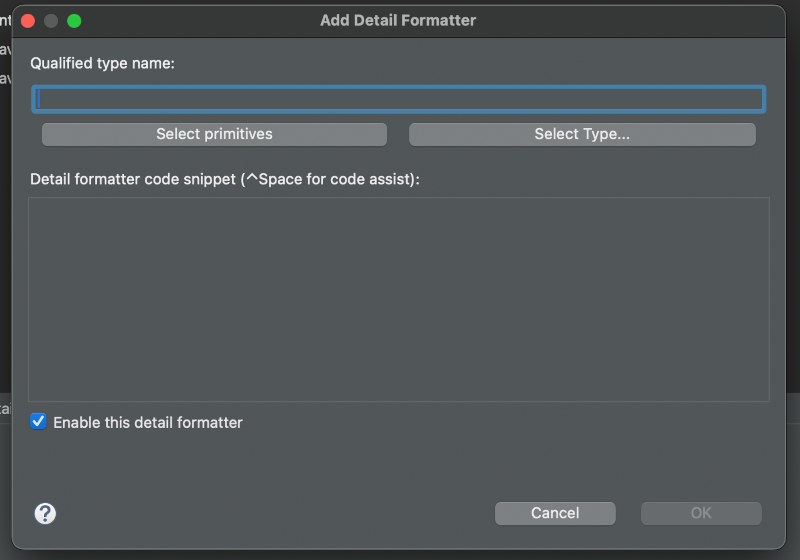 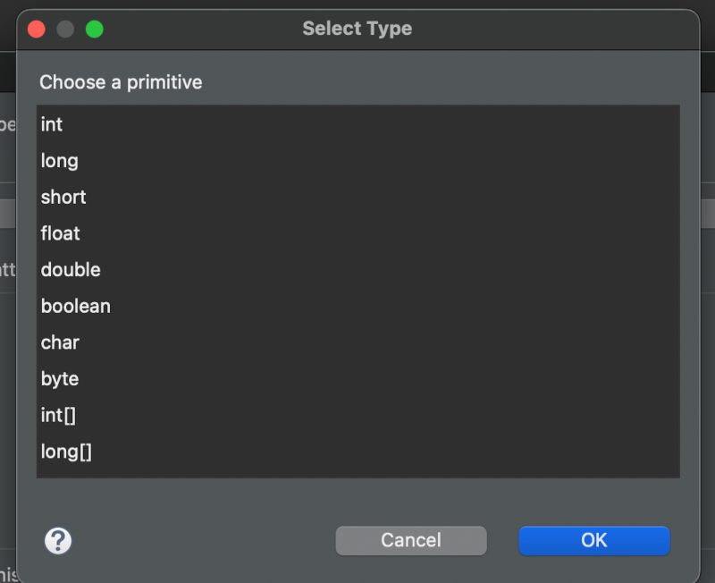 Custom formatting can also be accessed from the variables view menu options.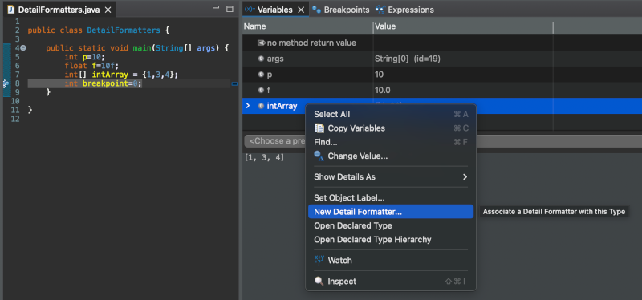 |
| Enhanced Formatting For Exception Objects |
Java debugger now shows stack traces for exceptions directly in the Variables and Expressions views. This enhancement applies by default for all Throwables, so developers can instantly access detailed exception information—such as stack traces and causes—without needing to configure a custom detail formatter.
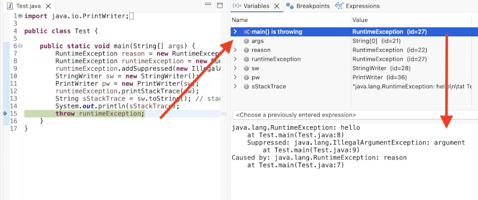 |